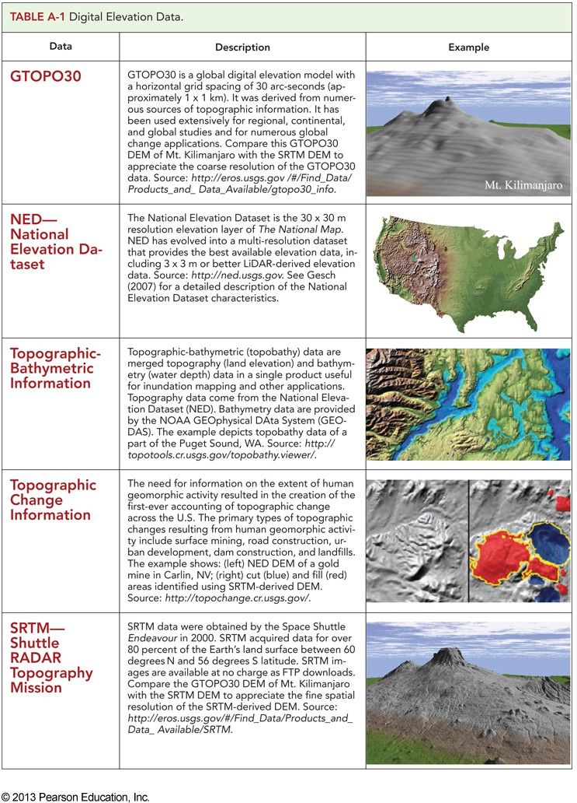
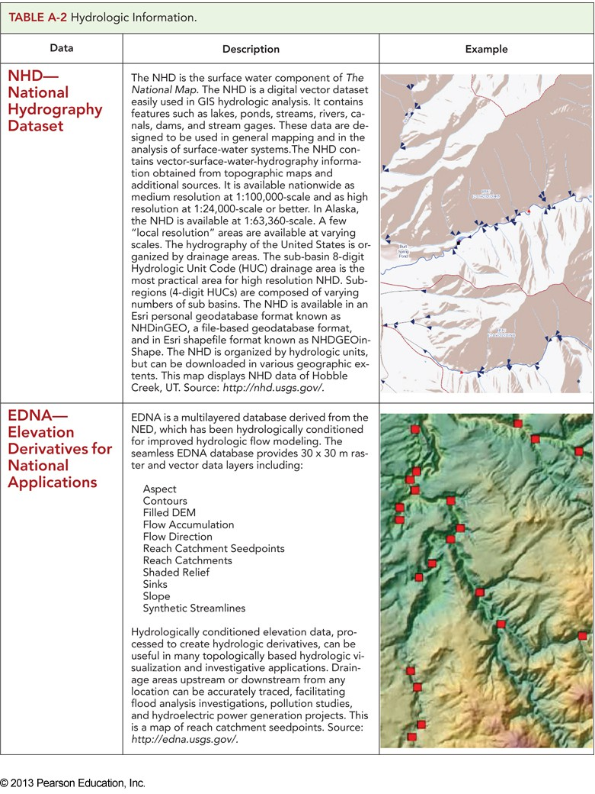
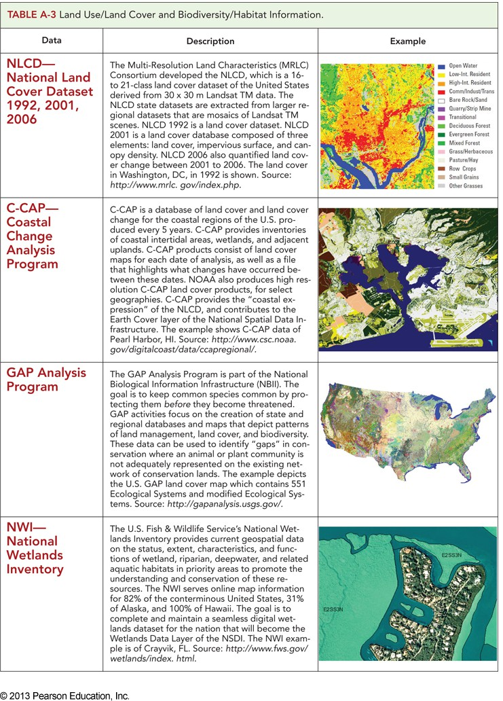
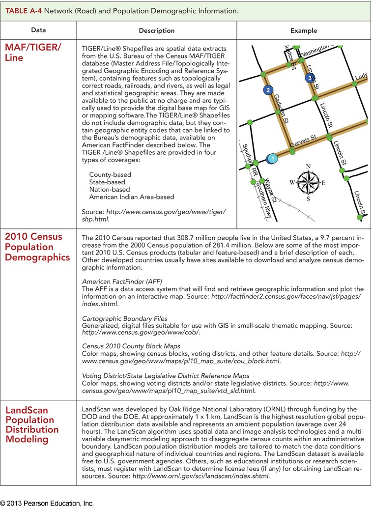
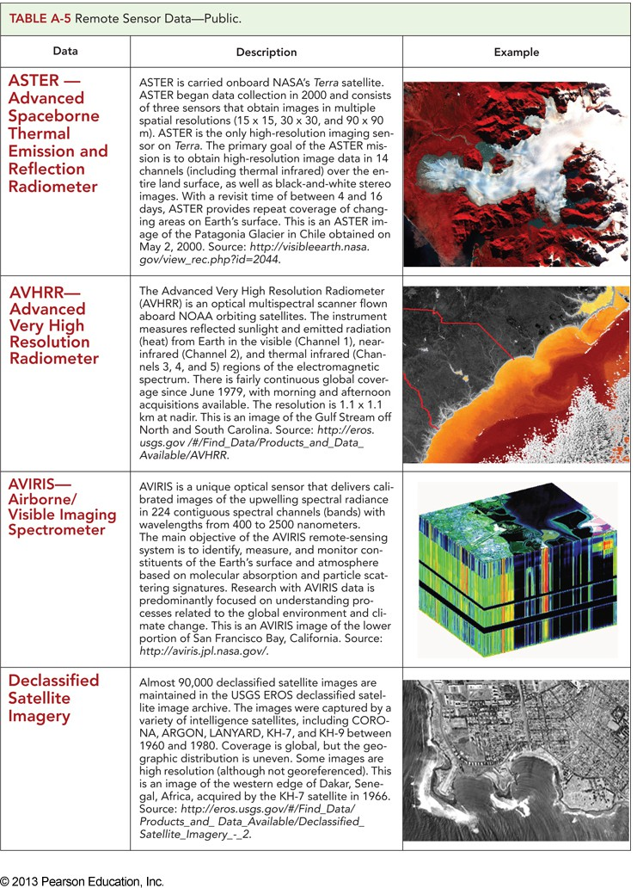
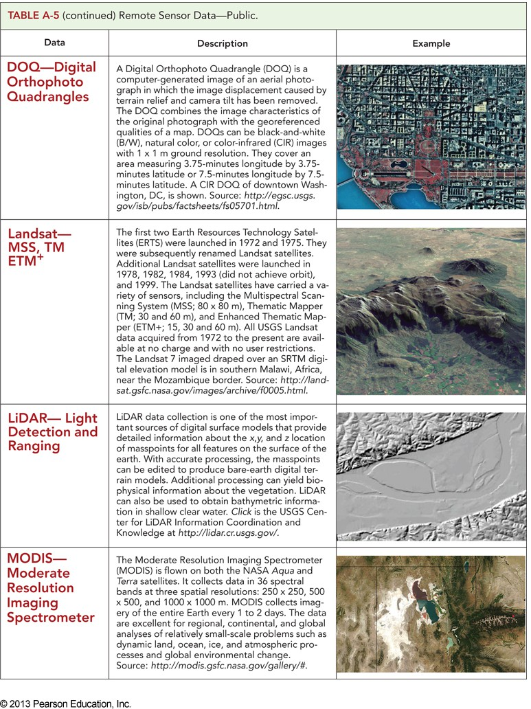
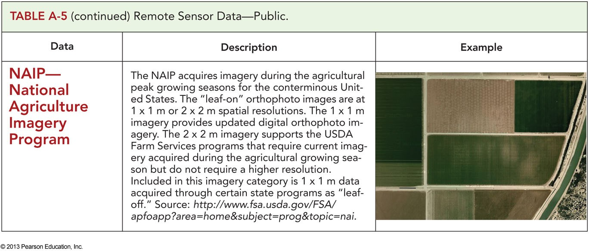
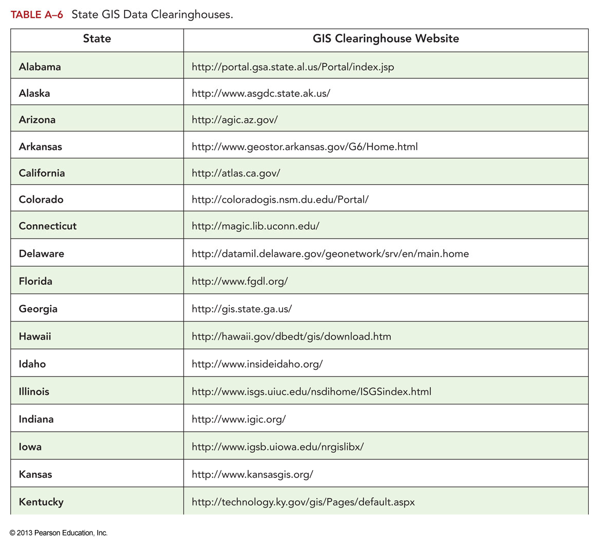
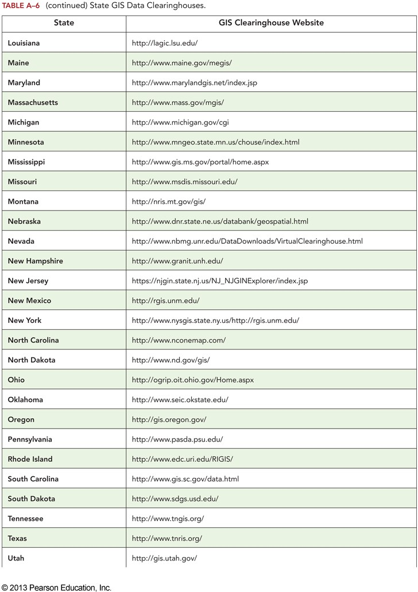
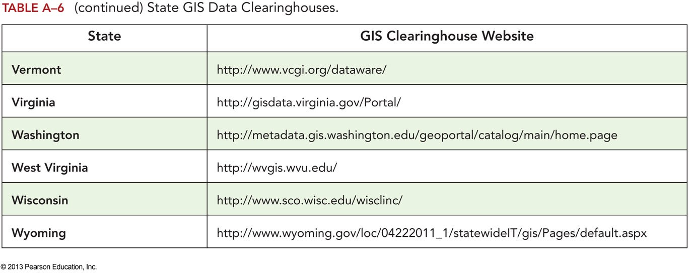

Start here: a clear project brief, then supporting resources, and finally the rubric that tells you what great looks like.
This is the foundation. Read it end-to-end once, then re-read the parts that describe data needs, expected outputs, and the workflow you should follow. Python programming has become an indispensable tool in Geographic Information Systems (GIS) and geospatial analysis, primarily due to its ability to efficiently handle and analyze the substantial volume of geospatial data generated daily in various applications. Its versatile libraries and frameworks, such as leafmap, geemap, geopandas, rasterio, and gdal, empower professionals to manipulate, visualize, and interpret this data, leading to insightful decision-making in various fields such as urban planning, environmental conservation, and sustainable agriculture, among many others.
This project aims to develop and foster your Python programming skills for analyzing geospatial data. The project is worth 20% of the total course grade. The project due date is March 13 at 11:59 PM. The last lab session in week 10 is allocated to the project to finalize your work before the submission.
Explore various applications of GIS and publicly available geospatial datasets.
Learn how to manipulate geospatial datasets (e.g., tabular datasets, raster, and shapefiles) using Python.
Explore geoprocessing tools in ArcPy and ArcGIS Pro and identify the appropriate tools for the defined project.
Learn how to automate the query process (e.g., spatial query) from a dataset by developing functions in Python.
Learn visualization of geospatial datasets in Python.
Foster your GIS and teamwork skills.
The project can be undertaken in a group of three or four. Collaboration with other fellows will provide an opportunity for you to practice and foster your teamwork skills, such as communication, leadership, collaboration, listening, time management, problem solving, and critical thinking – all required to work toward the project’s objectives in a more efficient and effective manner. In addition, a fewer number of projects enables the instruction team to provide timely constructive feedback. Nonetheless, under specific circumstances, individual project work may be permitted.
You may use the Canvas and/or Piazza discussion pages to share your areas of interest and form a group. In addition, please feel free to discuss the project’s progress or limitations/problems you might face to seek advice/help/feedback from others.
Once your team is formed, please enter the names of the group members in our shared Google Sheet on Canvas under the Project module.
https://docs.google.com/spreadsheets/d/1CGfTMb0hijTZtqQRDqMCkpdYH50y_iaXopJzp24DrDU/edit?u sp=sharing
Once you form your group, explore the wide range of GIS applications in various domains based on your team’s interests. You can define your project at your discretion and interest in any field, such as climate change, ecology, agriculture, urban planning, marketing, geography, environmental management, environmental justice, and engineering. While you are exploring various topics and problems, think of the following questions:
Why is this topic important? (motivation and significance)
Do we have access to all the datasets we need for this project? Do they need any preprocessing or data cleaning?
What type of geospatial analysis is required, and what geoprocessing packages in Python or tools in ArcGIS Pro can be used for this purpose? (Think about the degree of complexity and the required time)
Requirement: most of the project should be done in Python, either in Google Colab (or any other Python IDE) or in ArcGIS Pro notebook. You may only use ArcGIS Pro (or QGIS) for some parts of the projects, such as creating a map, performing visualizations, or applying projections.
Once you are done with the coding, please run the entire notebook so you get the results from
each code cell. To run the entire code cells, go to ‘Runtime’ tab and click on ‘Run all’.
You need to submit the notebook and the report (pdf or word file) on the Canvas page for this project.
You should also zip and upload all the project files (including reports, python scripts as *.py or
*.ipynb, ArcGIS Pro project as *.aprx, if you happen to use ArcGIS Pro, and geospatial datasets) via Box Drive (https://ucdavis.app.box.com/f/c65b0bac2fe14ff2aefbae7bf46533ad).
Each team member should submit their notebook individually on Canvas. However, one group member should upload all the files via Box.
Instructions on how to name the folder we upload via Box: please use the team number (based on the Google Sheet) and the last name of the group members in alphabetical order, separated by an underscore. For example, for a group with three people with the instructor team’s family names is:
NOTE: if you are a graduate student, you may want to define a project aligned with your thesis/dissertation.
Once the project is completed, it should be submitted via Canvas before the due date (March 13, 11:59 PM). The submitted project has three main components:
Project report as a PDF or Word file on Canvas.
Project codes/notebooks on Canvas.
Project files (all files, including reports, python scripts as *.py or *.ipynb, ArcGIS Pro project as
*.aprx, if you happen to use ArcGIS Pro, and geospatial datasets) via Box with the following link:
https://ucdavis.app.box.com/f/c65b0bac2fe14ff2aefbae7bf46533ad
The project report is a four-page (single-space) report (a 3-5 page report including the cover page is acceptable) with the following outline:
Cover page (the first page)
Title of the project
Name of the team members
Lab session for team members
Optional: a figure/map related to the project
Motivation/significance of the project
Objective(s)
Approach/methodologies
List of datasets used in the project
Source of the datasets (a link to download the dataset)
List of preprocessing, if any
Describe the geospatial analysis
What geospatial processing package/tools did you use?
Workflow of your spatial analysis in Python
Description of the functions you developed and their inputs and outputs
What setting did you use and why? For example, what setting did you use for the Python packages and methods used in your project?
Results
Interpretation of the results
Share your observations
What does the map tell us?
Did you meet the objective(s) you had defined?
Future work and potential limitations
What limitations did you have during the project, if any?
What would you do in the future to improve the project?
For the final group project, you may use Generative AI (GenAI) tools (e.g., ChatGPT, GitHub Copilot, Google Gemini) to support your work, provided they are used responsibly and transparently.
Examples of acceptable uses include (but are not limited to):
Brainstorming analysis approaches or workflows
Generating example or starter code that is modified, understood, and extended by the group
Debugging or explaining errors
Improving code documentation or readability
Please note that GenAI should be treated as a support tool, not a replacement for understanding or original work.
If your group uses any GenAI tool, you must include an AI Use Disclosure section in your final report or notebook that clearly states:
Which tool(s) were used
How they were used (e.g., code generation, debugging, explanation, visualization help)
Which parts of the project were supported by GenAI
How the group verified, modified, and understood the AI-generated output Failure to disclose the use of GenAI will be treated as a violation of academic integrity. Expectations When Using GenAI
Using GenAI raises expectations for the final project. Projects that use GenAI are expected to demonstrate:
Greater analytical depth
More detailed methodology explanations
Well-commented, well-structured, and customized code
Clear geospatial reasoning and interpretation of results
Evidence that all group members understand and can explain the analysis and code
Simply submitting AI-generated code without meaningful modification, explanation, or insight will result in lower credit, even if the code runs correctly.
The following are not allowed:
Submitting AI-generated code or text without understanding it
Using GenAI to complete the project with minimal human contribution
Misrepresenting AI-generated work as entirely your own
Using GenAI to bypass learning objectives or required analysis
All group members are responsible for the integrity and understanding of the final submission. You may be asked to explain your code, methods, and results, regardless of whether GenAI was used.
Examples of project reports for previous years: https://ucdavis.box.com/s/9g3e892vig6abtajivm05t59w9m1ofjs
|
|
|
|
|
|
|
|
|
|---|---|---|---|---|---|---|---|---|
|
||||||||
|
||||||||
|
||||||||
|
List of resources for GIS datasets
ArcGIS Living Atlas of the World https://livingatlas.arcgis.com/en/browse/#d=2
Earth Engine Data Catalog https://developers.google.com/earth-engine/datasets
GIS (Geographic Information Systems): California & Bay Area GIS Data https://guides.lib.berkeley.edu/gis/California
California GIS data
https://gis.data.ca.gov/ https://datausa.io/profile/geo/california
City of Davis GIS datasets http://maps.cityofdavis.org/library/
Sacramento
Suitability Analysis in Python https://michaelminn.net/tutorials/python-suitability/index.html
Historical Wildfire Analysis https://developers.arcgis.com/python/samples/historical-wildfire-analysis/
Safe Streets to Schools https://developers.arcgis.com/python/samples/safe-streets-to-schools/
Automate Building Footprint Extraction using Deep learning https://developers.arcgis.com/python/samples/automate-building-footprint-extraction-using- instance-segmentation/
Crime analysis and clustering using geoanalytics and pyspark.ml https://developers.arcgis.com/python/samples/crime-analysis-and-clustering-using- geoanalytics-and-pyspark/
Pawnee Fire Analysis
https://developers.arcgis.com/python/samples/wildfire-analysis-using-sentinel-2-imagery/
Network Analysis: Investigate Chennai Floods https://developers.arcgis.com/python/samples/track-river-pollutants/
Information extraction from Madison city crime incident reports using Deep Learning https://developers.arcgis.com/python/samples/information-extraction-from-madison-city- crime-incident-reports-using-deep-learning/
More examples can be found here: https://developers.arcgis.com/python/samples/
Please explore various projects listed below each category on the left panel. For instance, check
all the projects listed under ‘GIS analysis and data scientists’.
NOTE: the following projects are mostly done in ArcGIS Pro, but you can use ArcPy or any other Python packages for your project to accomplish the same objectives.
Related website: https://livingatlas.arcgis.com/en/browse/?q=fire#d=2&q=fire
Related website: https://learn.arcgis.com/en/projects/analyze-covid-19-risk-using-arcgis-pro/
Related website: https://learn.arcgis.com/en/projects/identify-groundwater-vulnerable-areas/
Related website: https://learn.arcgis.com/en/projects/calculate-impervious-surfaces-from- spectral-imagery/
Related website: https://learn.arcgis.com/en/projects/identify-gaps-in-wheat-production/
Related website: https://learn.arcgis.com/en/projects/determine-the-most-dangerous-roads-for-
Related website:https://learn.arcgis.com/en/projects/automate-fire-damage-assessment-with- deep-learning/
Related website: https://learn.arcgis.com/en/projects/monitor-forest-change-over-time/
Use this section as your toolbox. When you get stuck, come back here for examples, hints, and guidance that make your implementation smoother and faster. >

App_01_Table > >
App_02_Table > >
App_03_Table > >
App_04_Table > >
App_05_TableA > >
App_05_TableB > > App_05_TableC
App_06_TableA


App_06_TableBApp_06_TableC

Now switch into reviewer mode. The rubric is your checklist: aim for the criteria early so you do not discover expectations at the last minute. ## ABT/HYD 182
Scoring Rubrics for GIS Project
| Category | Scoring Criteria | Total Points |
| Topic | Topic is new, attention-getting, and significant. | 5 |
|
Background/motivation/ significance |
Clear statement about the significance/motivation behind the research (explanation about why this project is important) | 10 |
| Objectives and goals | Objectives (or hypotheses) are well presented (clear and reasonable explanation of the main goal(s) of the project) | 10 |
| Approach/methodologies |
A comprehensive explanation of the methodology; The dataset is well described (the source of the dataset and a link to the source; data type (raster, vector, tabular, etc.), time and location of the data, etc.) Pre-processing methods are presented, if any (cleaning the dataset, removing irrelevant data, etc.) Processing workflow is properly described (a flowchart showing all the steps should be sufficient) |
15 |
| Python scripts |
Python notebook is clean, readable, and well-documented (notes/comments are added for each cell) Geoprocessing methods are described comprehensively (list of geospatial processing packages that were used; setting used for each function/method and explanation about why this setting was used, a brief explanation of the geoprocessing package/function/method, for instance, what is the input and output of a function, etc.) |
25 |
| Results |
Visuals/maps/figures are well prepared and relevant to the project objectives. The significant findings/results of the project are thoughtfully presented (map(s) are discussed, conclusion(s) is made, the objectives were met or not, etc.) |
15 |
| Future work and potential limitations | The limitations of the project are discussed (for instance, availability of a dataset); Potential solutions/recommendations are presented to address these limitations. | 5 |
| Reference | Appropriate referencing of data/visual/context that is/was not generated by the presenter(s). | 5 |
| Project files | All project files are uploaded into the Box drive folder (e.g., python notebooks, ArcGIS Pro project file as aprx (if any), geospatial datasets). | 10 |